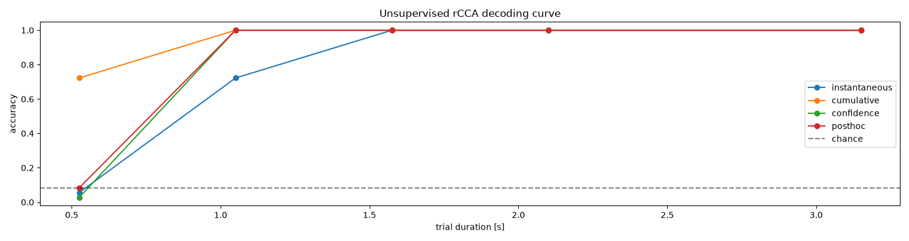
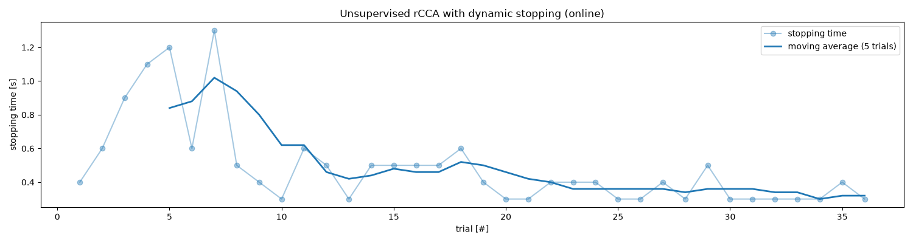

Note
Go to the end to download the full example code.
Unsupervised rCCA
This script shows how to use unsupervised adaptive rCCA from PyntBCI for calibration-free decoding of c-VEP trials [4]. Unlike the supervised rCCA (see the rCCA example), the unsupervised variant needs no calibration data: each trial is decoded by fitting a separate rCCA per candidate stimulus (as a hypothesis) and selecting the stimulus whose model best fits the data. This “instantaneous” mode can be improved by cumulatively learning from previously decoded trials, using their predicted labels as pseudo-labels [1] [2] [3]. Two further extensions are shown: confidence-weighting (updates are driven mostly by confidently decoded trials) and post hoc re-analysis (past trials are re-decoded, and their pseudo-labels corrected, with a later, better model).
References
import matplotlib.pyplot as plt
import numpy as np
import pyntbci
Simulate data
The cell below simulates synthetic c-VEP data in response to a set of Gold codes (as in [1]). The trials are put in a random (chronological) order to mimic an online copy-spelling session, in which the unsupervised classifier sees one trial at a time and adapts as it goes.
FS = 120 # sampling frequency
PR = 60 # presentation rate
V = pyntbci.stimulus.make_gold_codes()[:12]
V = np.repeat(V, FS // PR, axis=1)
N_CLASSES = V.shape[0]
CYCLE_SIZE = V.shape[1] / FS
N_TRIALS = 3 * N_CLASSES
N_CHANNELS = 8
N_SAMPLES = int(3 * CYCLE_SIZE * FS)
SEED = 42
X, y, V = pyntbci.eeg.generate_c_vep(
N_TRIALS, N_CHANNELS, N_SAMPLES, FS, n_classes=N_CLASSES, stimulus=V, primary_channels=4, random_state=SEED
)
# Shuffle the trials into a random chronological order
rng = np.random.default_rng(SEED)
order = rng.permutation(N_TRIALS)
X, y = X[order, :, :], y[order]
# All variants share the same rCCA configuration. A "refe" event with an onset event is used (as in [1]_). Because the
# once-per-trial onset response makes the response covariance rank-deficient (and, at short trial durations, there are
# few samples relative to the response length), alpha_m truncates the near-degenerate directions of the response
# covariance (as for supervised rCCA with little data).
RCCA_KWARGS = dict(stimulus=V, fs=FS, event="refe", onset_event=True, encoding_length=0.3, alpha_m=0.99)
Inspect data
print("X", X.shape, "(trials x channels x samples)", X.dtype) # EEG
print("y", y.shape, "(trials)", y.dtype) # labels
print("V", V.shape, "(classes, samples)", V.dtype) # codes
print("fs", FS, "Hz") # sampling frequency
print("fr", PR, "Hz") # presentation rate
X (36, 8, 378) (trials x channels x samples) float32
y (36,) (trials) int64
V (12, 126) (classes, samples) uint8
fs 120 Hz
fr 60 Hz
Unsupervised decoding
UnsupervisedRCCA is calibration-free, so there is no supervised fit(X, y). Instead, predict(X) streams the trials in the given (chronological) order and decodes each one with the model learned from the trials before it. The four variants of [1] are selected with the cumulative, confidence, and posthoc flags. Shown on short (one-cycle) trials, where a single trial carries too little information to decode well on its own, cumulative learning from previously decoded trials clearly helps.
n_samples = int(CYCLE_SIZE * FS) # one cycle
# Instantaneous: every trial decoded independently, no learning across trials
rcca_i = pyntbci.classifiers.UnsupervisedRCCA(**RCCA_KWARGS, cumulative=False)
yh_i = rcca_i.predict(X[:, :, :n_samples])
print(f"Instantaneous accuracy: {np.mean(yh_i == y):.2f}")
# Cumulative: learn from previously decoded trials using their (pseudo-)labels
rcca_c = pyntbci.classifiers.UnsupervisedRCCA(**RCCA_KWARGS, cumulative=True)
yh_c = rcca_c.predict(X[:, :, :n_samples])
print(f"Cumulative accuracy: {np.mean(yh_c == y):.2f}")
Instantaneous accuracy: 0.72
Cumulative accuracy: 1.00
Decoding curve
Following [1], the four variants are compared with a decoding curve: the classification accuracy as a function of the single-trial duration. For each trial duration, the full online session is re-run from scratch on the truncated trials. Cumulative learning clearly improves over the instantaneous baseline, especially at shorter trial durations, and the post hoc re-analysis squeezes out a bit more at the short end; the variants converge once single trials are long enough to decode well on their own.
variants = {
"instantaneous": dict(cumulative=False),
"cumulative": dict(cumulative=True),
"confidence": dict(cumulative=True, confidence=True),
"posthoc": dict(cumulative=True, confidence=True, posthoc=True),
}
trial_sizes = np.array([0.5, 1.0, 1.5, 2.0, 3.0]) * CYCLE_SIZE # in seconds
accuracy = np.zeros((len(variants), trial_sizes.size))
for i_variant, (name, flags) in enumerate(variants.items()):
for i_size, trial_size in enumerate(trial_sizes):
rcca = pyntbci.classifiers.UnsupervisedRCCA(**RCCA_KWARGS, **flags)
yh = rcca.predict(X[:, :, : int(trial_size * FS)])
accuracy[i_variant, i_size] = np.mean(yh == y)
# Plot decoding curves
plt.figure(figsize=(15, 4))
for i_variant, name in enumerate(variants):
plt.plot(trial_sizes, accuracy[i_variant, :], linestyle="-", marker="o", label=name)
plt.axhline(1 / N_CLASSES, color="k", linestyle="--", alpha=0.5, label="chance")
plt.xlabel("trial duration [s]")
plt.ylabel("accuracy")
plt.legend()
plt.title("Unsupervised rCCA decoding curve")
plt.tight_layout()

Online dynamic stopping
The sections above decode each trial at a fixed duration. Online, we would rather stop as soon as we are confident, so that easy trials are decided quickly. This is dynamic stopping: DistributionStopping wraps the classifier and, each time a new segment of data comes in, tests whether the winning score stands out enough from the rest (here, an outlier of a beta distribution fit to the non-winning scores) to commit to a decision [4].
Below it is combined with the cumulative UnsupervisedRCCA, fully online: we loop over the trials in their chronological order and, within each trial, feed the data in growing segments of 100 ms (running=True, resetting the running state at the first segment of each trial). predict returns -1 while the trial is undecided; the first segment at which it returns a label >= 0 is the stopping point, and that decision also commits the (now decided) trial into the online model exactly once, so the classifier keeps adapting from one trial to the next. Because the cumulative model grows more confident as it accumulates trials, it tends to stop earlier: the stopping time decreases over the course of the session.
segment_time = 0.1 # 100 ms segments
segment_samples = int(segment_time * FS)
n_segments = N_SAMPLES // segment_samples
stop = pyntbci.stopping.DistributionStopping(
pyntbci.classifiers.UnsupervisedRCCA(**RCCA_KWARGS, cumulative=True),
segment_time=segment_time,
fs=FS,
distribution="beta",
target_p=0.95,
min_time=0.2, # do not stop on the first, near-degenerate segments
max_time=N_SAMPLES / FS, # force a decision by the end of the trial
)
stop.fit(X=None, y=None) # calibration-free: sets up the (empty) online model, X and y are not used to train it
yh = np.full(N_TRIALS, -1, dtype="int64")
stop_times = np.zeros(N_TRIALS)
for i_trial in range(N_TRIALS): # trials arrive one by one, in chronological order
prev = 0
for i_segment in range(n_segments): # grow the trial 100 ms at a time
idx = (1 + i_segment) * segment_samples
label = stop.predict(X[[i_trial], :, prev:idx], running=True, reset=(i_segment == 0))[0]
prev = idx
if label >= 0: # a decision is made (and this trial folds into the online model), so stop growing it
break
yh[i_trial] = label
stop_times[i_trial] = idx / FS
print(f"Online dynamic-stopping accuracy: {np.mean(yh == y):.2f}")
# Plot the stopping time over the session (in chronological trial order), with a moving average to show the trend. It
# tends to decrease as the cumulative model adapts and grows more confident.
window = 5
trend = np.convolve(stop_times, np.ones(window) / window, mode="valid")
plt.figure(figsize=(15, 4))
plt.plot(1 + np.arange(N_TRIALS), stop_times, linestyle="-", marker="o", alpha=0.4, label="stopping time")
plt.plot(1 + np.arange(window - 1, N_TRIALS), trend, color="C0", linewidth=2, label=f"moving average ({window} trials)")
plt.xlabel("trial [#]")
plt.ylabel("stopping time [s]")
plt.legend()
plt.title("Unsupervised rCCA with dynamic stopping (online)")
plt.tight_layout()

Online dynamic-stopping accuracy: 0.83
Total running time of the script: (17 minutes 52.290 seconds)